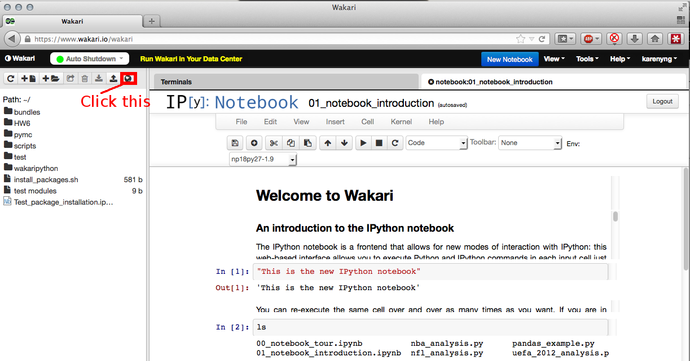
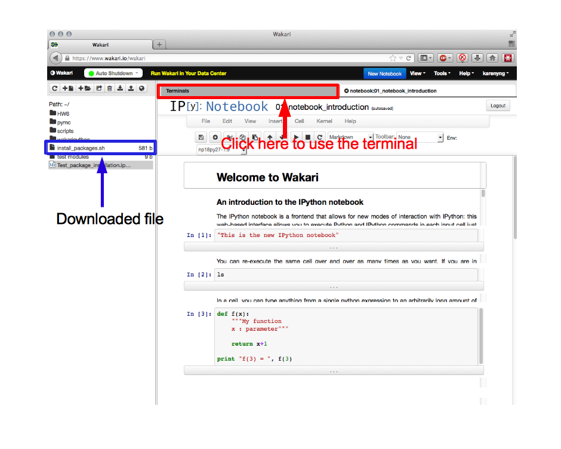
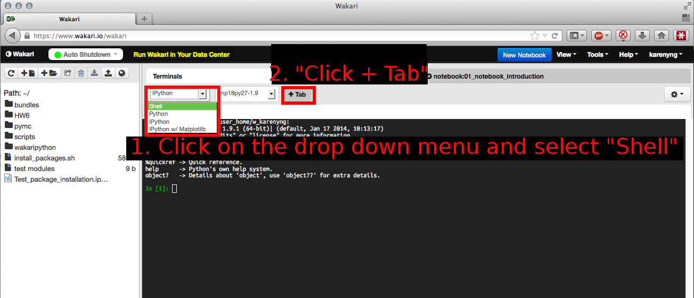
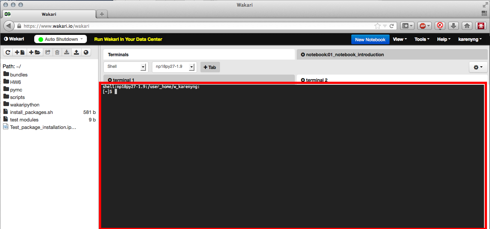

Recommended browser - Google Chrome
Firefox might not render the ipython notebooks correctly and no tests have been done on Internet Explorer.Setting up wakari.io account for use
- Register for a wakari account.
- First log onto your wakari account.
Notice the icon on the top left on the wakari page which looks like:

- After clicking the icon, there should be a popup
window asking you a web file to import, enter the
following the URL:
https://raw.githubusercontent.com/karenyyng/Phy154/master/install_packages.sh - Then the script for setting up python packages should be downloaded to your wakari.io account. 
- How to use the shell within Wakari: Make sure that you are really using "Shell" not
"IPython"

This is how the shell should look like.

- After switching to the terminal, type the following
command
(notice [~]$ is the terminal prompt and not part of the command)[~]$chmod u+x ./install_packages.sh - Enter the following command
[~]$./install_packages.shthen press enter
There should be installation messages. You would have to wait until the installation is finished. This might take a while.
then press enter
7a i. After the commands have finished, check if there are any error messages. If there are no error messages, click the following link: https://www.wakari.io/fetching/karenyng/Test_package_installation to fetch a copy of the notebook for testing the installation.
7aii. Execute the content of the notebook as instructed by the notebook.
6b. If step 6 does not work, try the following link instead ipython notebook.
7b. Click the green button on the top right hand corner named "Run / Edit this Notebook", then follow the instructions in the notebook